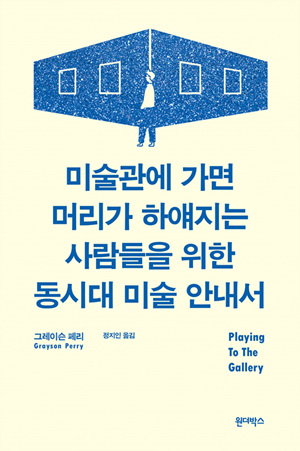

164
예술은 직업이 아니라고 말할 사람도 많을 것이다. 하지만 우리가 자신을 동시대 예술가로 정의한다는 것은 여러 측면에서 "나는 직업 경력과 꽤 비슷한 걸 갖고 있다."고 말하는 셈이다. 왜냐하면 이제는, 특히 서구에서는 정식 교육을 받지 않은 천재란 진기한 옛이야기에나 나오는 존재로 느껴지기 때문이다.
165
내가 "나 미술 대학 갈 거예요." 라고 말했을 때 어머니한테서는 노동계급 가족에게서 흔히 나오는 반응이 나왔다. 그러니까 "그건 제대로 된 직업이 아니야."라는 말 말이다. 그리고 여려 면에서 어머니 말이 맞았다.
혁신기술부의 31쪽짜리 보고서 <고등교육의 수익 2011>에는 꽤 냉엄한 그래프가 실려 있다. 이 이야기를 꺼내는 내 마음은 상당히 불편하지만 그래도 우리는 이 상황을 직시해야 한다. 바로 평균적인 미술 대학생은 대학에 전혀 가 본 일 없는 사람에 비해 돈을 겨우 6.3퍼센트 더 벌게 된다는 내용이다. 성별 차도 유난히 두드러져서, 여성은 11.7퍼센트를 더 버는 반면 남성은 1퍼센트를 덜 번다고 나와 있다. 그러니 돈을 버는 보장된 길을 원하는 사람이라면 미술 대학에 가지 않는 것이 자명한 답이다.
166
미술 대학 밖에 있는 스레기 수거함은 아마도 지구상에서 가장 추한 물건들의 보관소일 것이다. 그것들은 단순히 추한 물건들인 것이 아니라 예술이 되고자 했던 추한 물건들이기 때문이다. 그 수거함은 부서진 꿈들의 잡탕 같은 것이다.
175
내가 만나 본 성공한 예술가들은 대부분 대단히 엄격하게 규율 잡힌 사람들이다. 그들은 시간 약속을 정확히 지키고 많은 시간을 일에 쏟아붓는다. 예술가란 모두 조금은 혼란스럽고 불안정한 사람들이라는 생각은 신화일 뿐이다. 예술가들은 행동하는 사람들이다! 그들이 원하는 건 예술가인 것이 아니라 예술을 만드는 것이다. 그들은 예술을 만드는 것을 즐긴다.
177
파티에 가면 사람들이 묻는다. "무슨 일 하세요?" 그러면 나는 "아, 나는 예술가에요."라고 대답한다. 그러면 그들은 이렇게 말한다. "분명 재밌는 일이겠죠! 그 모든 조각, 항아리 만들기, 그런 거 얼마나 재밌을까요. 엄청 재미날 게 분명해요!" 그러면 난 이런다. "상상해 보세요. 그러니까 큰 미술관, 정말 거대한 미술관을 상상해 보시라고요. 거기서 당신에게 전시회를 열자고 제안을 해요. 거기에 있는 커다란 전시실, 텅빈 하얀 방이 당신의 작품으로 채워지길 기다리고 있죠. 한 1,2년 후에 내가 그 방을 작품으로 가득 채우면 사람들이 그걸 보러 옵니다. 어쩌면 수천 명이 될지도 몰라요. 언론에서도 와서 보고는 그 전시회에 관해 글을 쓰고 말을 해 대요. 그런 다음 난 그 작품들을 팔아야 해요. 내 수입은 어떤 사람들의 반응에 달려 있어요. 미술관에서 일하는 다른 여러 나라 사람들, 제 조수들의 수입도 거기 달려 있을 거예요. 거기다 더해서 나는 어린아이처럼 해맑은 기쁨을 느끼겨 그 작품들을 창조해야 하는 거예요. 이게 순전히 재미있는 일일 것 같습니까?" 예술, 그것은 진지한 업종이다.